|
|
Vocrecaptor on twitter Vocrecaptor discussion group |
  |
|
Vocrecaptor Editor v1.2.2Vocrecaptor Editor is written in Java, works on all platforms and requires Java Runtime Environment (JRE) 6 or later. |
What is Vocrecaptor Editor?Let's assume you are reading a book on a language you are studying (for example english) or you are making a home assignment for your english language courses and you don't want to miss any single word you've met for the first time and you want to learn it. Of course, you can write it out in special notebook but let's do it in a different way.How to work with Vocrecaptor Editor?
Starting Vocrecaptor EditorTo run the Vocrecaptor from the command line, go to the dist folder and type the following:java -jar "vocrecaptoreditor-v1.2.1.jar" where v1.2.1 is the current version number. You can
also execute the program by double clicking on the jar-file.
The program icon will appear in a system tray: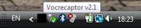 After a double click on the icon the Program manager window will appear: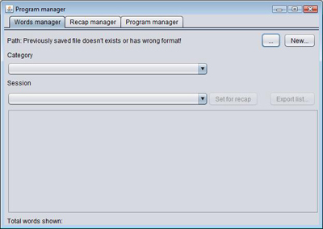 Opening an existing storageTo open existing dictionary press... button and choose a dictionary file.
If a format of the specified file is incorrect the message will appear: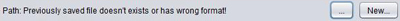 Creating a new storageIn this case you should create a new dictionary (storage). To do this pressNew... button and in opened standard File save dialog
specify storage path,
file name and file extension (you may use .txt or whatever you like):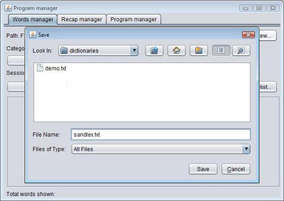 Created storage file will be set as a program dictionary: 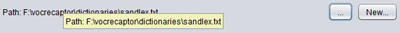 Starting editorCloseProgram manager window. Right-click on program icon in system tray and
click on Words editor: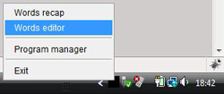 If dictionary file is not set the notification window will appear: 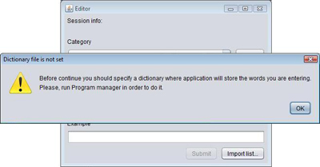 In this case you have to open the Program manager and specify a dictionary file (?).
If dictionary file was set correctly the Editor window will appear: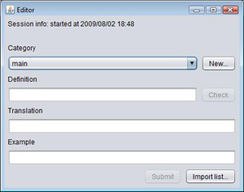 Using sessionsEach time you open an editor window the new session is started. During this session you can add as many words as you like and all these words will be saved within this session. It will allow you to recap words from specified session. Why do I need this? For example, when you are making exercises for tomorrow's lesson you add all the words within a single session so when your teacher will ask you to refresh in mind all the words from one of the previous lesson you will make it easy if you remember the date and time of that session.Each time you start editor window you will be asked whether you want to continue a previous session or start a new one: 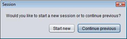 If you want the previous session to be continued (for example in case this session were closed accidentally) you should press Continue previous button, otherwise press
Start new button.Creating a categoryTo add a new word you should choose a category fromCategory list or
create new category by pressing New... button and specifying it's name: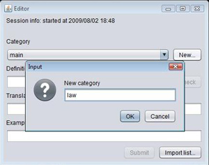 Press OK and category wll be added to category list and set as word's
category.
Adding a wordAfter this you should add word definition (input fieldDefinition),
translation into your language (input field Translation) and
expression wich uses this word (input field Example of usage).
Definition is required field so while this field
is empty the Submit button will stay disabled. Press Submit
button
to add the word to dictionary. The fields will be cleared and you
can add a next word. If the word you want to add is already exists in you dictionary
you will get an information message along with a table containing possible duplicated words: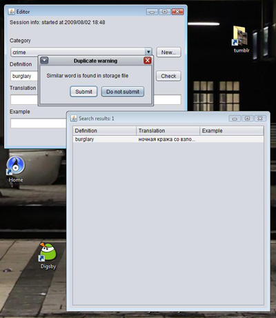 In the table you can see all the words and words combinations with this word. If you don't want to complete submission - press Do not submit button otherwise press Submit.It's recommended to check duplicated words just after you've entered a definition but not at the submission time. To do this you should press Check... button after the definition is
entered. If the definition or the expression with this definition is found in the storage
you will see a table with possible duplicated values: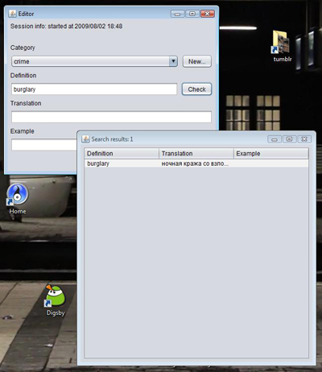 If the storage doesn't contain the word definition the Check... button will switch to disabled state
and you can continue: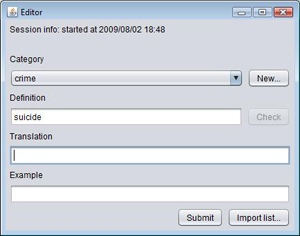 Importing words from a fileIf you don't want to fill the dictionary word by word you can import the word list from a file. File should be a plain text file where each line contains:word[tabulation]translation[tabulation]example of usage.
Only files of this format can be imported. All the words will be
imported within current session and will be included to the
specified category.To import word list press Import... button and specify a source file:
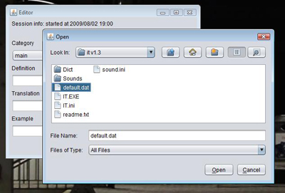After pressing Open button import operation will start and after it
will be finished the notification message in the system tray area will be
shown: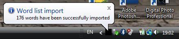 If something goes wrong you'll get an error message in the system tray area. Working with program managerAfter adding new words you can start to recap them. Double click on program icon in system tray to start theProgram manager. Ensure
that the path string contains your storage file. Category list
contains all categories and Session list contains all sessions from
specified storage: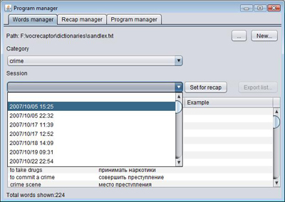 Previewing the word listYou can choose any combination of these parameters. For example, you can choose all the words fromcrime category, all the words from
yesterday's session or all crime words from today's session.
To choose all categories or sessions from the list you should
choose the empty value - the first value in the both lists.
The preview table is refreshing automatically when you choose values from lists: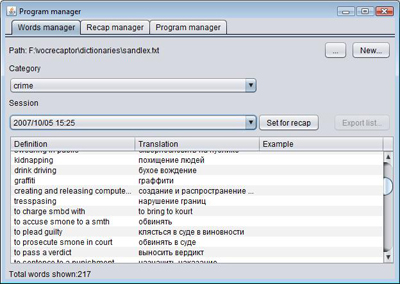 Under the table you can see a words counter. Starting a recap windowNow you want to learn the words from this list. Go to the system tray area, right click on the program icon and chooseWords recap: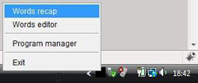 Recap window will appear. Drag it to the system tray area of the
desktop. This window is modal thus it will stay over the others
opened windows: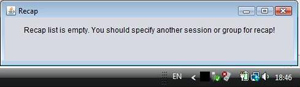 Setting recap listAs you can see from the message in this window to start recaping you should specify the word list. Switch back to theProgram manager window
and press Set for recap button (?).The Recap window will start periodically display the words from
the list: firstly definition, secondly translation and then
example of usage if it exists.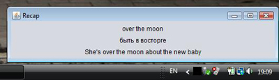 Setting recap settingsYou can specify desirable intervals for definition, translation and example displaying. OpenRecap manager tab in Program manager
window: Here you can choose display periods for each of these items. If you want to recap the words in reverse order (translation appears before definition) - set Show definition and translation in reverse
order checkbox. If you want to display words in random order you can
do it here as well.Exporting recap list to a fileTheProgram manager allows to export currently recaping word list
to file (for printing). To do this switch to the Words manager tab
of the Program manager and press Export list... (?).Note, that the Export list... button is enabled only if recap list is set (?).
Press this button and enter a file name where you want to save word list to: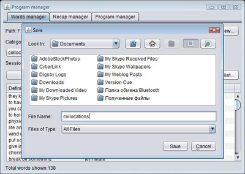 After the export operation completed you will get a notification message near the system tray area: 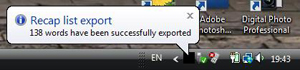 Now you can open this file, print it and hang it on the toilet door. Setting up look and feelThe program is cross-platform thus the interface will slightly differ between platforms. You can also choose the look and feel which you like more. OpenProgram manager tab in Program manager window. Here you
can specify desirable Look and feel mode from the available modes: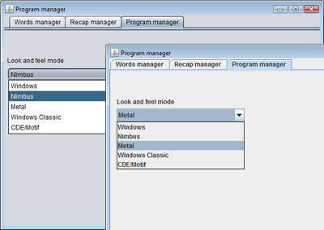 Some of them are cross-platform (for example Metal), some only for Windows (Windows, Windows classic). The list of available modes will differ between platforms. |
| Alexey Peskov, 2007-2009 | |